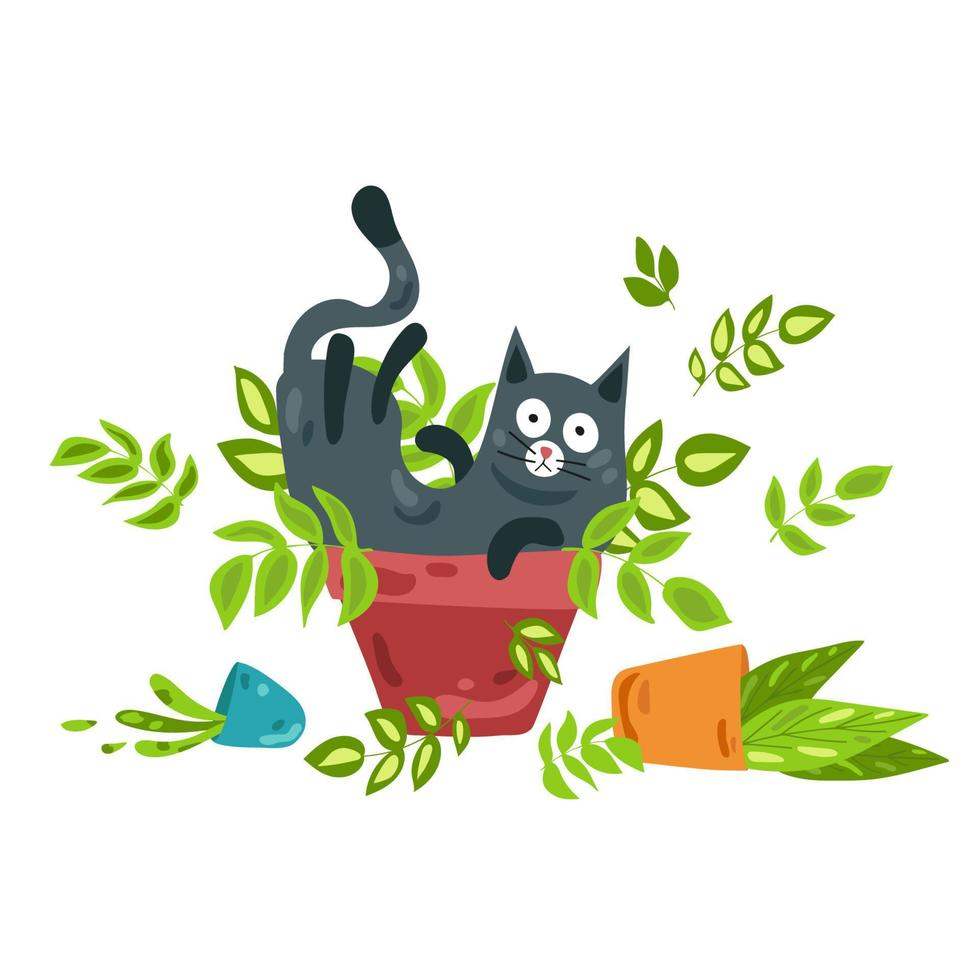

Fauna and your cats
Cats are a common household companion that take up a special place in a lot of our hearts. Wether you have one, two, or more, cats are wonderful pets to share your home with. What a lot of people don't know however is that a lot of commonly beloved plants are not safe for cats to be around. The effects they can have on cats (and other pets as well) range from an upset stomach to sadly death. It's important to know what plants you can have in your home and garden and which ones you need to get rid of or keep out of reach of your cats. This site will provide examples of a few commonly loved plants that are both safe and not safe for your furry housemates. There will be links to full lists avaliable as well as a page specifically of what to do in an emergency situation if your cats injest or come into contact with a dangerous plant.
|  |
My furbabies